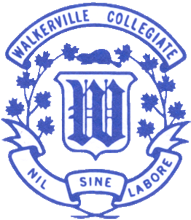

Resume
Education
-
University

- Univeristy of Windsor
- Currently Attending September 2018 - Present
- Elected on to Computer Science Society in December 2019 as Vice President of Societal Development.
- Responsibilities:
- Coordinate planning and executing strategies to grow the Computer Science Society
- Increase income by means of fundraising and promotion
- Oversee growth of society presence on campus by means of marketing, social media and promoting events
High School
- 
- Walkerville Colegiate Institute
- Attended from: September 2014 - June 2018
- Accepted into Walkerville's Center for the Creative Arts.
- Focused in
- Visual Arts: Drawing, Painting
- Digital Arts: Photography, Photoshop, Video Editing
Awards and Recognition
- Communitech’s Code to Win competition, University of Windsor
October 2019
- Captain, Senior Girl’s Volleyball Team, Walkerville Collegiate Institute
2018
- Most Valuable Player, Track and Field, Walkerville Collegiate Institute
2014 - 2018
- Captain, Junior Girl’s Basketball Team, Walkerville Collegiate Institute
2016
- Captain, Junior Girl’s Volleyball Team, Walkerville Collegiate Institute
2016
Work Experience
- Library Page
- City of Windsor
- Current Occupation October 2016 - Present
- Efficiently followed organizational requirements for locating library material. Interacted with and assisted patrons with library resources and children’s activities.
- Food Server
- St. Francis of Assisi Church Banquet Hall
- September 2014 - September 2019
- Developed time management skills through maintaining multiple tables for events. Attended to patrons and effectively relayed information to and from kitchen staff. Supplied various meals to many patrons in a timely manner.
- Soccer Referee
- Windsor Soccer Club
- March 2016 - September 2017
- Quickly and independently make significant choices regarding foul play and impose penalties. Establish and maintain rapport with coaches, players and other referees. Officiate at sporting events and/or athletic competitions to ensure the safety regulations and game rules are observed.